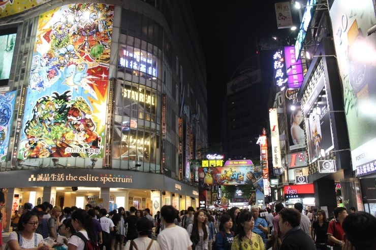
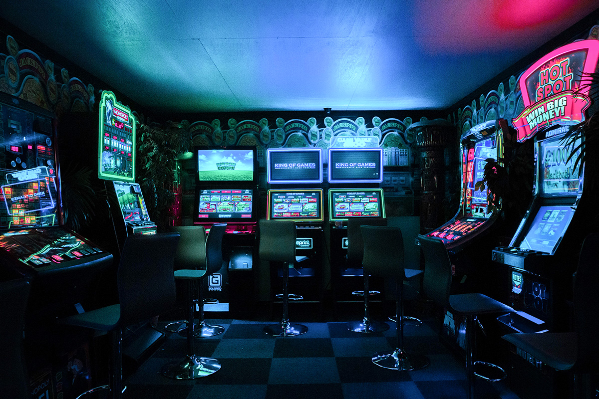
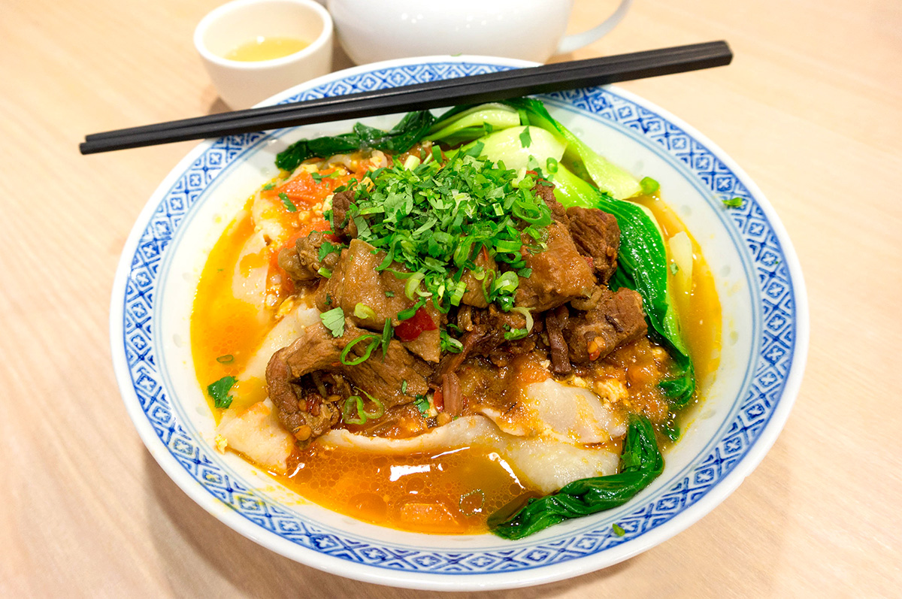
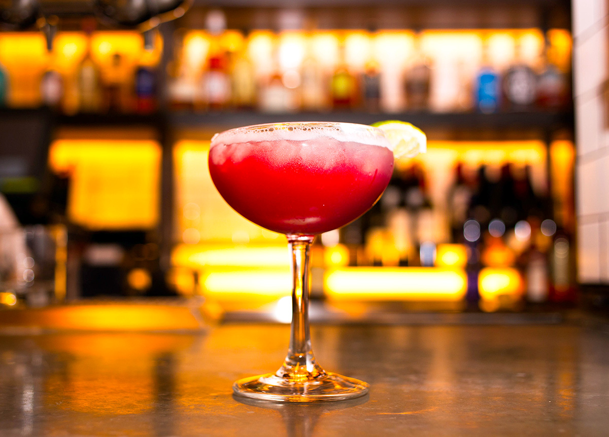
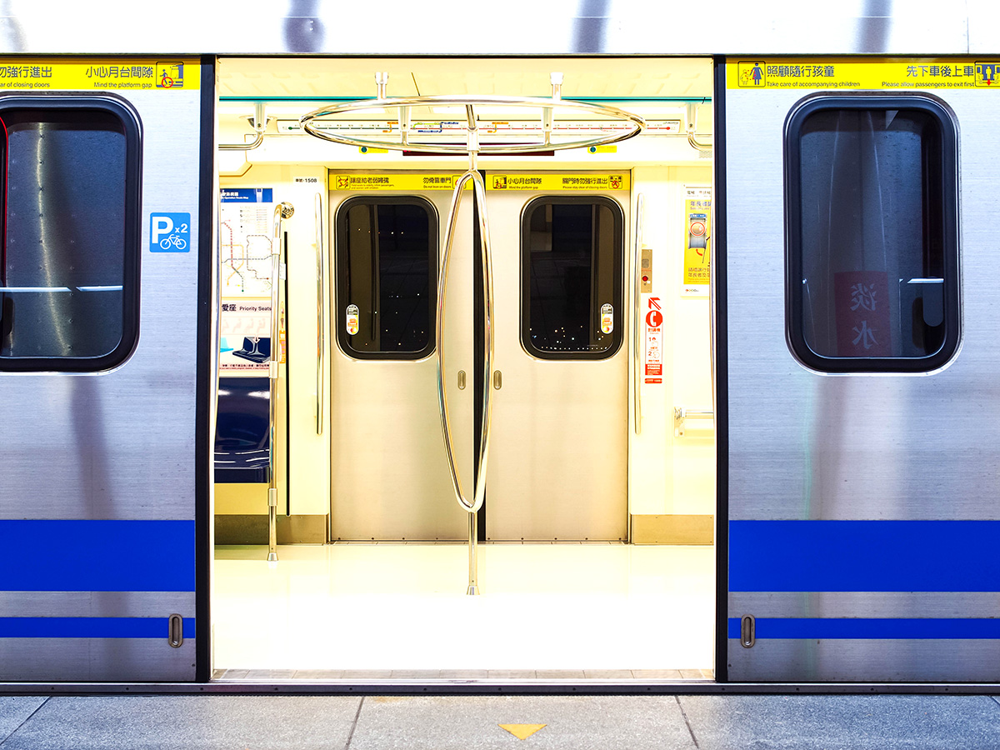
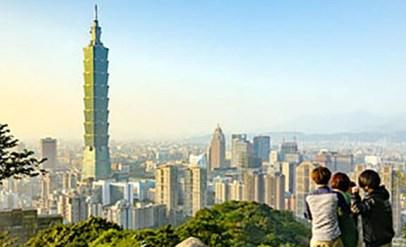
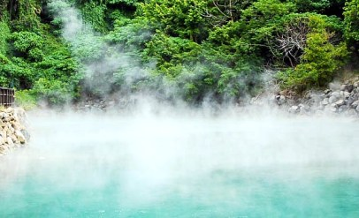
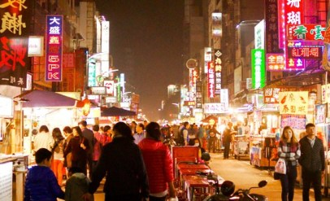

대만여행 : 지우펀 소개
여행이 아니더라도 주말이면 많은 대만 사람들이 찾는 번화가
대만의 명동이라 불리는
시먼딩 (Ximending)
타이베이를 대표하는 청춘과 예술의 거리, '시먼딩'은 어떤 곳?

시먼딩은 최신 유행 패션, 감각적인 아이템, 지인들에게 줄 기념품은 물론, 지역 아티스트들의 예술작품과 공예품, 디자이너 의류까지 없는 게 없을 정도로 여행객이나 현지인이 찾는 모든 것이 모여있는 곳이다. 국내에서 ‘샴푸 마사지’로 잘 알려진
대만 미용실의 두피 마사지도 시먼딩에서 경험할 수 있는 즐길 거리 중 하나다. 늘 볼거리와 즐길 거리로 가득한 시먼딩에서는 무엇을 상상하든 그 이상을 경험할 수 있다.
뭐니 뭐니 해도 해외여행의 백미는 현지인처럼 생활해보는 게 아닐까? 남들 다 하는 뻔한 코스 말고, 현지인이 자주 가는 ‘진짜’ 맛집이나 여행지를 찾아보자. 그런 의미에서 시먼딩에서 현지인들이 유독 줄을 길게 서 있는 곳이 있다면, 뭔진 잘 몰라도 일단 줄부터 서보는 것도 괜찮다.
관광객이 아닌 현지인들이 시간과 돈을 투자하는 곳이라면 어쨌든 보통 이상은 된다는 증거다. 그래도 아직 시먼딩에서 무엇부터 시작할지 감이 잡히질 않는다면 이번 포스팅을 참고하자. 꼼꼼히 정리한 각종 알짜배기 정보가 여행 계획을 한층 쉽게 만들어 줄 수도 있다.
또 하나 더! 항상 소매치기를 조심해야 한다. 시먼딩은 매달 3백만 명 정도의 방문객이 모이는 곳으로 1년 365일 내내 많은 사람으로 북적인다.
이렇게 정신없는 틈을 타 관광객을 노리는 소매치기가 있을 수 있으니 항상 소지품을 잘 챙기도록 하자. 시먼딩뿐 아니라 인파가 많은 곳에선 항상 도난의 위험이 있으니 어디를 가더라도 정신줄은 꼭 붙잡고 있을 것!

시먼딩에서 쇼핑하거나 놀기 좋은 곳은?
- 홀리데이 KTV(Holiday KTV): 호텔 못지않은 시설과 서비스를 자랑하는 대만 노래방에서는 맛있는 안주와 술도 곁들일 수 있다. 시먼딩에서 신나게 놀고 싶다면 홀리데이 KTV를 방문해보자
- 하이퍼 게이머(Hyper Gamer): 여러 종류의 리듬 게임과 인형 뽑기 등이 주를 이루는 타이베이 인기 오락실 중 하나다. 시먼딩을 거닐다 잠깐 들러 연인 또는 친구와 함께 게임 실력을 겨뤄보면 어떨까?
- 럭스 시네마(Lux Cinema): 영화가 별 게 있나 싶지만, 현지인의 일상을 함께 느낄 수 있는 가장 쉽고 좋은 방법이기도 하다. 잠시 북적거리는 시먼딩 거리에서 벗어나고 싶을 땐 럭스 시네마를 찾아가 보자. 엄청난 좌석 수를 자랑하는 대형 아이맥스 전용관부터 다양한 크기의 상영관이 있다.
특히 작은 상영관은 분위기가 친근하고 차분해서 기분전환이 필요할 때나 하루를 마무리하기 알맞은 곳이다. 한국 영화를 상영할 때도 있으니 상영 스케줄을 미리 확인하자.

대만은 역시 식도락 여행! 시먼딩 추천 맛집
대만하면 제일 떠오르는 이미지, 바로 ‘맛있는 음식’이다. 시먼딩에서 만큼은 뭘 먹을지 고민하지 않아도 좋다. 뭘 먹어도 맛있을 테니 말이다. 길거리 음식도 꽤 유명한데, 직접 눈앞에서 만드는 과정을 보고 있으면 군침이 절로 돈다. 서서 먹는 길거리 음식만큼 앉아서 먹을 수 있는 음식점도 많다. 가지각색 종류의 대만 음식은 어쩜 그리 맛있는지, 먹기 위해 대만을 여행하는 사람들도 있을 정도다. 24시간 내내 배고플 틈이 없는 시먼딩, 생각만 해도 행복하다. 물가도 그리 비싸지 않으니 먹을 때만큼은 먹는 데만 집중하자!
- 천천리(天天利): 국내에서도 아침 식사하기 좋은 시먼딩 맛집으로 입소문 난 곳으로, 장조림(돼지 조림) 비빔밥에 달걀을 곁들인 메뉴가 유명하다.
가격도 착한 데다 현지인도 자주 찾는 검증된 맛집 중의 맛집! 한국어 메뉴판도 있고, 향신료 향도 거의 없어 한국인 입맛에도 안성맞춤이다. 이곳에서 대만 여행의 하루를 시작해보자.
- 티지아이 프라이데이(TGI FRIDAYS): 갑자기 웬 패밀리 레스토랑인가 싶겠지만 한 가지 음식만 너무 먹다 보면 질릴 때도 있는 법.
그럴 일은 없겠지만, 대만 여행 중 혹시나 양식이나 한식이 먹고 싶다면 시먼딩 근처에 있는 티지아이 프라이데이나 한식당을 찾아보자.
- 라오산동(老山東) 우육면: 대만식 소고기 국수, 우육면(뉴러우미엔)을 아직 먹어본 적 없다면 미슐랭이 선정한 시먼딩 우육면 맛집, 라오산동을 추천한다.
우육면은 사골육수에 쇠고기 수육과 면을 넣어 만드는 국수로, 대만에선 ‘국민 국수’로 통한다. 가격도 저렴하고 직원들도 친절해 관광객뿐 아니라 현지인들도 많이 찾는다.

밤에도 신나게! 시먼딩 주변 클럽 라운지 & 바 추천
어둑어둑한 밤이 되면 시먼딩은 낮과는 또 다른 분위기를 뽐낸다. 처음 만나는 현지인들과 어울려 즐거운 시간을 보내는 것도 해외여행의 묘미 중 하나다.
과한 음주는 금물이지만, 적당한 음주가무는 여행을 더욱 특별하게 만들어준다. 다양한 가격대와 스타일의 시먼딩 명소를 소개한다.
- 한코 60(Hanko 60): 아직 잘 모르는 사람이 더 많은 시먼딩의 숨겨진 칵테일 바, 한코 60.
친절한 직원들은 물론 이곳에서만 맛볼 수 있는 시그니처 드링크가 준비돼있다. 연인, 친구와 시먼딩을 방문한다면 꼭 들러보자
- 록시 로커(Roxy Rocker): 시먼딩의 유명한 락 음악 클럽으로 신나는 리듬에 맞춰 마음껏 춤출 수 있는 댄스 플로어와 테이블 구역이 나뉘어 있어 취향에 맞게 즐길 수 있다.
- 지오그래피 바앤카페(Geography Bar & Café): 대만 감성 넘치는 이곳에서 특별한 칵테일을 즐겨보자.
신선한 대만 과일, 차 등으로 만든 독특한 드링크는 이곳에서만 맛볼 수 있다. 많은 방문객이 추천하는 곳으로 믿고 가보자.

시먼딩 대중교통 이용 팁
시먼딩이 인기가 많은 이유 중 하나는 편리한 대중교통이다. 현지인이 아니어도, 한자를 잘 몰라도 누구나 쉽게 찾아갈 수 있다.
시먼딩과 제일 가까운 지하철역, 시먼역은 쑹산-신뎬(Songshan-Xindian)선과 반난(Bannan)선을 모두 이용할 수 있어 타이베이 어디에 있더라도 이동하기 편리하다.
역 근처에 숙소를 잡으면 지하철로 이동하기 더 편리하겠지만, 꼭 그렇지 않더라도 타이베이는 워낙 대중교통이 잘돼있어서 크게 불편하진 않다.
지하철 티켓은 이용 일수에 따라 무제한 패스를 선택할 수도 있고, 필요할 때마다 편도 티켓을 구입하는 방법도 있다. 여행객을 위한 다양한 종류의 교통카드가 있으니 혜택을 미리 확인해보자.
참고로 현지에서 지하철은 타이베이 메트로 또는 MRT(Taipei Mass Rapid Transit)라고 부른다.
타이베이는 지하철뿐만 아니라 버스 시스템도 잘 갖춰져 있으며 시내 및 광역(장거리) 버스 요금은 15 대만달러(약 550원)부터 시작한다. 택시를 이용하는 방법도 있다.
대만의 택시 기본요금은 70 대만달러(약 2,600원)부터 시작하며, 기본요금 적용 거리 약 1.3km를 넘어가는 시점부터 약 0.2km마다 5 대만달러(약 185원)의 추가 요금이 부과된다.
따라서 택시 탑승 전 예상 요금을 미리 확인해보면 불필요한 지출을 막을 수 있다. 택시를 탈 때는 지정된 택시 정류장에 있는 노란색 택시 외에는 타지 않도록 주의하자.
타이베이와 타 도시 사이를 이동할 때는 대만 고속철도(Taiwan High-Speed Rail, THSR)가 제일 빠르고 편리하다.
고속철도는 대만의 주요 도시를 길게 잇는 철도로, 각 지역 주요 역과 연결돼있으며, 지역의 작은 역은 대만 지역 철도를 통해 이동할 수 있다.
요금은 이동 거리와 좌석 등급에 따라 155 대만달러(약 5,700원) ~ 1500 대만달러(약 57,000원)로 다양하다.
관련 게시글
|  |
 |
 |
타이베이의 매력에 빠져보자! 타이베이 여행 시 놓치지 말아야할 8가지 |
대만 여행 가이드: 당일 여행으로 즐기는 타이베이 명소 6곳 |
대만 식도락 여행 가이드: 타이페이에서 꼭 먹어봐야 할 음식 & 맛집 추천 |
| 타이베이의 다양함과 다채로운 음식의 향연, 훌륭한 자연환경은 많은 여행객의 마음을 사로잡아 타이베이를 아시아에서 가장 인기 있는 여행지 중 하나로 만들어준다.
타이베이에서 휴가를 보낸다면 새로운 로맨스를 일으킬 수도 있는 놓치지 말아야 할 여행지를 시작으로 타이베이와 사랑에 빠질 나만의 수천 가지 이유를 찾아보자. |
타이베이(Taipei) 당일 여행에는 과거 광산 마을이었던 지우펀(Jiufen)을 한가로이 거닐거나 예류 지질공원(Yehliu Geopark)에서 햇빛에 반짝이는 기암들의 사진을 마음껏 찍는 시간이 빠질 수 없으리라.
짧은 휴가만으로 타이베이에 대한 모든 궁금증이 해결되지 않는다면 버스를 타고 여유롭게 르웨탄 호수(Sun Moon Lake, 일월담)나 타이루거 국립공원(Taroko National Park)을 둘러보자. |
대만 음식은 중국 중부 및 남부 음식의 영향을 많이 받았지만, 사람들이 즐겨 찾는 음식 대부분은 대만 고유의 독특한 맛을 지니고 있다.
가장 잘 알려진 우육면부터 시작해 해산물, 돼지고기, 닭고기, 두부 등 다양한 재료로 만든 맛있는 음식들이 가득한 대만으로 식도락 여행을 떠나보자. |